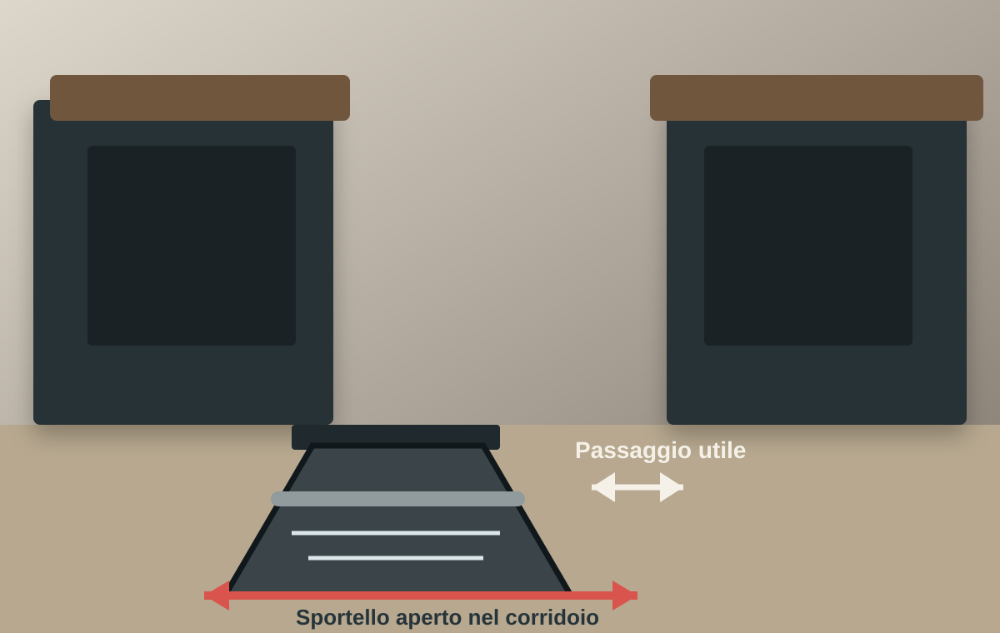

Lavastoviglie aperta e passaggio bloccato.
Il corridoio sembra sufficiente finché lo sportello non viene aperto.
Leggi il caso
Casi analizzati
Ogni caso è anonimizzato e semplificato. Le immagini mostrano la scena specifica del problema, non un esempio generico riutilizzato.
Guarda i casiRaccolta casi
Il corridoio sembra sufficiente finché lo sportello non viene aperto.
Leggi il caso Zona giorno
Zona giornoSeparare l'ingresso può migliorare la privacy e togliere spazio al soggiorno.
Leggi il caso Cucina compatta
Cucina compattaAnte, cassetti ed elettrodomestici aperti occupano il centro stanza.
Leggi il caso Preventivo
PreventivoIl totale è chiaro, ma materiali, accessori e lavorazioni lo sono molto meno.
Leggi il casoAprire, passare, sedersi, cucinare in due o leggere una voce mancante.
Scopri il metodo 90GMisure, aperture, vincoli e priorità cambiano da casa a casa.
Invia il materialePrivacy dei casi
Vengono mostrati soltanto gli elementi necessari a capire la criticità, senza pubblicare il progetto completo.
Il tuo caso
Invia il materiale e il dubbio principale.
Invia il caso su WhatsApp